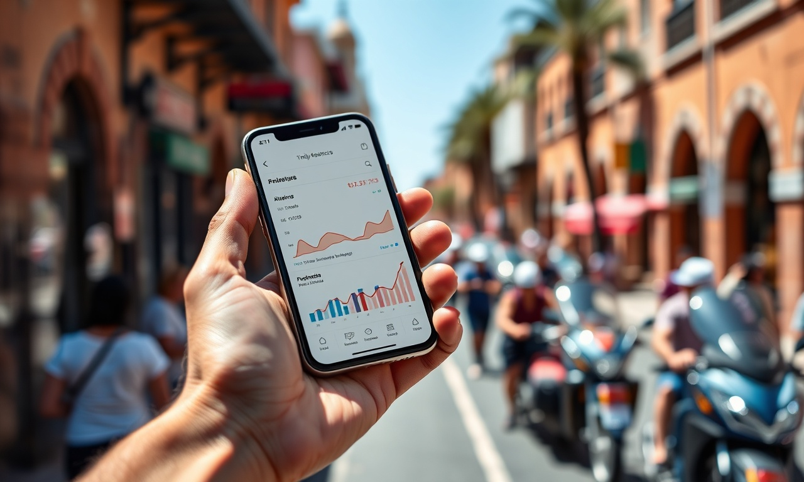

Stratégie Digitale au Maroc : Le Plan d'Action 90 Jours Qui Transforme Vos Clics en Chiffre d'Affaires à Casablanca et Rabat
En résumé : Stratégie Digitale au Maroc : Le Plan d'Action 90 Jours Qui Transforme Vos Clics en Chiffre d'Affaires à Casablanca et Rabat est une démarche stratégique clé dans le domaine du Stratégie Digitale. Elle permet aux entreprises au Maroc d’optimiser durablement leurs performances digitales, d’augmenter leur visibilité et de maximiser le retour sur investissement (ROI) de leurs campagnes.
La stratégie digitale au Maroc est le processus structuré et mesurable visant à acquérir, convertir et fidéliser des clients via les canaux numériques (SEO, Ads, réseaux sociaux) pour générer une croissance rentable. Elle repose sur des données chiffrées, des objectifs clairs et une exécution disciplinée sur 90 jours, adaptée aux réalités du marché marocain.
Assez de bla-bla. Vous dirigez une entreprise à Casablanca ou Rabat, vous avez un budget digital, mais les résultats ne suivent pas. Vous voyez des chiffres sur Google Analytics, des likes sur Facebook, mais votre chiffre d'affaires, lui, reste désespérément plat. C'est le problème numéro un que nous constatons chez DatRey en 2026. Le digital n'est pas un terrain de jeu, c'est une machine de guerre commerciale. Et votre machine a besoin d'un carburant précis : une stratégie. Pas une liste d'actions aléatoires.
Pourquoi 90 Jours? Le Cycle de la Transformation Digitale
Pourquoi 90 jours? Parce que c'est le cycle biologique de la croissance digitale. En 90 jours, vous pouvez lancer, mesurer, itérer et voir les premiers résultats significatifs. C'est le temps nécessaire pour que les moteurs de recherche indexent vos optimisations SEO, pour que vos campagnes Google Ads trouvent leur rythme de croisière, et pour que votre équipe intègre les nouveaux processus. Au Maroc, où le marché est dynamique et concurrentiel, attendre 6 mois ou un an pour voir des résultats est un luxe que personne ne peut se permettre en 2026. Les entreprises de Casablanca qui dominent leur secteur sont celles qui agissent vite et s'adaptent plus rapidement que les autres.
Jours 1 à 30 : Le Diagnostic Profond et l'Audit Stratégique
La première phase de notre plan d'action est non négociable : l'audit. On ne règle pas une fuite d'eau sans trouver la fissure. Votre présence digitale est un entonnoir. L'audit va identifier précisément où se situent les fuites : dans l'attraction (SEO, Ads), la conversion (UX, landing pages) ou la fidélisation (emailing, CRM). Pour une PME à Rabat avec un budget de 50 000 MAD par mois, nous commençons par analyser la concurrence. Qui sont les acteurs qui capturent la demande? Quels mots-clés utilisent-ils? Quel est leur positionnement? Nous utilisons des outils de veille concurrentielle pour décortiquer leurs stratégies de contenu et leurs backlinks. Parallèlement, l'audit technique SEO est primordial. Si votre site met 5 secondes à charger sur une connexion 4G à Casablanca, vous perdez 40% de vos visiteurs. C'est mathématique. L'audit UX examine le parcours client. Votre bouton de contact est-il visible? Votre formulaire de devis est-il trop long? Chaque friction est une perte de chiffre d'affaires potentiel.
L'analyse des données existantes est la pierre angulaire de cette phase. Nous plongeons dans vos Google Analytics 4, votre Search Console et vos données de campagnes publicitaires. Nous cherchons des anomalies, des opportunités cachées. Par exemple, un produit qui génère beaucoup de trafic mais peu de ventes. Pourquoi? Le trafic est-il qualifié? La page produit est-elle optimisée? L'audit sémantique permet de cartographier l'intention de recherche de vos clients. Un client à Marrakech qui cherche une 'agence immobilière de luxe' n'a pas la même intention qu'un client qui cherche 'appartement à vendre Marrakech'. La stratégie de contenu doit répondre à ces nuances. À la fin de ces 30 jours, vous avez un document clair : un plan d'action priorisé avec des estimations de gains potentiels. C'est votre feuille de route pour les 60 prochains jours.
Jours 31 à 60 : L'Optimisation Explosive et la Mise en Place des Fondations
C'est la phase de transformation. Après le diagnostic, place à l'action. L'optimisation technique SEO est prioritaire. Nous corrigeons les erreurs de balisage, améliorons la vitesse de chargement, créons un maillage interne pertinent. L'objectif est de rendre votre site irréprochable aux yeux de Google. En parallèle, nous déployons la stratégie de contenu. Fini les articles de blog génériques. Nous créons des contenus qui répondent à des questions précises que se posent vos clients, avec des données, des exemples concrets et des appels à l'action orientés conversion. Pour une entreprise de BTP à Tanger, cela signifie des articles sur 'le coût de construction d'une villa moderne à Tanger en 2026' ou 'les normes de construction parasismique au Maroc'. Ces contenus attirent un trafic ultra-qualifié.
Cette phase est aussi celle de l'optimisation des pages de conversion. Vos landing pages sont vos commerciaux de nuit. Elles doivent être persuasives, claires et rapides. Nous testons différents titres, différentes offres, différents visuels. L'optimisation du taux de conversion (CRO) est un processus continu. Nous créons des variantes de vos pages et nous les testons. Une augmentation de 1% de votre taux de conversion peut représenter une hausse significative de votre chiffre d'affaires annuel. Nous mettons également en place les fondations de votre tracking. Si vous ne mesurez pas, vous ne savez pas. Nous configurons des tableaux de bord personnalisés qui vous montrent, en temps réel, le retour sur investissement de chaque action. Les données deviennent votre langage commun.
Pour les entreprises qui veulent des résultats rapides, nous activons les campagnes Google Ads. Mais attention, pas de campagnes au hasard. Nous ciblons des mots-clés à forte intention commerciale. Pour un cabinet d'avocats à Rabat, cela signifie enchérir sur 'avocat droit des affaires Rabat' plutôt que sur 'droit des affaires Maroc'. Le premier mot-clé indique une intention claire de trouver un service, le second est trop large. Nous créons des annonces percutantes qui mettent en avant votre proposition de valeur unique. Les extensions d'annonces, comme les liens annexes ou les appels, augmentent la visibilité et le taux de clic. Le budget est géré rigoureusement. Chaque dirham dépensé doit avoir un objectif de retour sur investissement. Nous optimisons quotidiennement les enchères et les mots-clés pour maximiser votre rentabilité.
Jours 61 à 90 : Le Scale-Up Rentable et l'Automatisation
Les fondations sont solides, les premiers résultats sont là. La dernière phase du plan est celle du passage à l'échelle. Nous analysons les données des 60 premiers jours pour identifier ce qui fonctionne le mieux. Quels canaux génèrent le plus de leads? Quels contenus attirent le plus de clients? Nous doublons la mise sur les actions gagnantes. Si le SEO sur les articles de blog fonctionne, nous augmentons la cadence de publication. Si Google Ads génère un coût par acquisition acceptable, nous augmentons le budget. C'est la loi du plus fort : investir là où la rentabilité est prouvée. L'automatisation du marketing entre en jeu. Nous mettons en place des séquences d'emails automatisées pour nourrir les prospects qui ne sont pas encore prêts à acheter. Un visiteur télécharge votre livre blanc, il entre dans un tunnel d'emails qui le guide vers la décision d'achat. C'est un commercial qui travaille 24h/24, 7j/7.
Nous affinons également les campagnes publicitaires. Nous utilisons les données de conversion pour créer des audiences similaires (lookalike) sur Meta Ads (Facebook/Instagram) ou des audiences personnalisées sur Google Ads. Le ciblage devient chirurgical. Nous touchons les personnes les plus susceptibles d'acheter, réduisant ainsi le gaspillage publicitaire. Le rapport final est un document de synthèse qui détaille chaque action, les résultats obtenus et les recommandations pour les 90 prochains jours. Ce n'est pas la fin, c'est le début d'un cycle d'amélioration continue. La stratégie digitale n'est jamais figée. Elle évolue avec le marché, les technologies et les comportements des consommateurs.
Le Coût de l'Inaction et le Rôle d'un Partenaire Stratégique
Ne pas agir a un coût. Chaque jour sans stratégie digitale solide, vous laissez des parts de marché à vos concurrents. Une entreprise à Casablanca qui ne se positionne pas sur les mots-clés stratégiques de son secteur verra son trafic organique stagner, voire décliner. Elle devra payer de plus en plus cher pour chaque clic sur Google Ads. La visibilité devient un luxe. L'inaction est la stratégie la plus risquée qui soit. C'est là que DatRey intervient. Nous ne sommes pas une agence de plus. Nous sommes un partenaire de croissance. Notre approche est pragmatique et orientée résultats. Nous ne vous vendons pas des heures de travail, nous vous vendons des clients et de la croissance rentable. Notre expertise couvre le SEO/GEO, Google Ads, l'acquisition client et la stratégie de contenu. Nous avons aidé des PME à Tanger, des multinationales à Casablanca et des startups à Marrakech à atteindre leurs objectifs de croissance.
Notre méthode est éprouvée. Elle repose sur l'analyse de données, la créativité et une exécution rigoureuse. Nous commençons toujours par un audit complet de votre présence digitale pour identifier les opportunités à fort potentiel. Ensuite, nous élaborons un plan d'action personnalisé avec des objectifs chiffrés. Enfin, nous exécutons, nous mesurons et nous optimisons en continu. Votre réussite est notre réussite. Nous nous engageons à vous fournir des rapports transparents qui montrent clairement le retour sur investissement de nos actions.
Votre Prochaine Étape : L'Audit Digital Gratuit
Vous avez lu ce guide jusqu'au bout, vous êtes donc conscient de l'importance d'une stratégie digitale solide. Vous savez que le plan de 90 jours est une méthode éprouvée pour accélérer la croissance. La question est : qu'allez-vous faire de cette information? Vous pouvez la ranger dans un tiroir et continuer à subir un marché de plus en plus concurrentiel. Ou vous pouvez passer à l'action. Chez DatRey, nous proposons un Audit Digital Gratuit. Nous analysons votre présence en ligne, votre concurrence et vos opportunités de croissance. En 30 minutes, nous vous donnons une vision claire de ce qui doit être amélioré et du potentiel de chiffre d'affaires que vous laissez sur la table. C'est sans engagement. C'est une opportunité pour vous de voir le digital avec un regard neuf. En 2026, le digital n'est pas une option, c'est une nécessité. Mais le digital sans stratégie est un puits sans fond. Faites le premier pas vers une croissance rentable. Contactez-nous dès aujourd'hui pour votre audit.